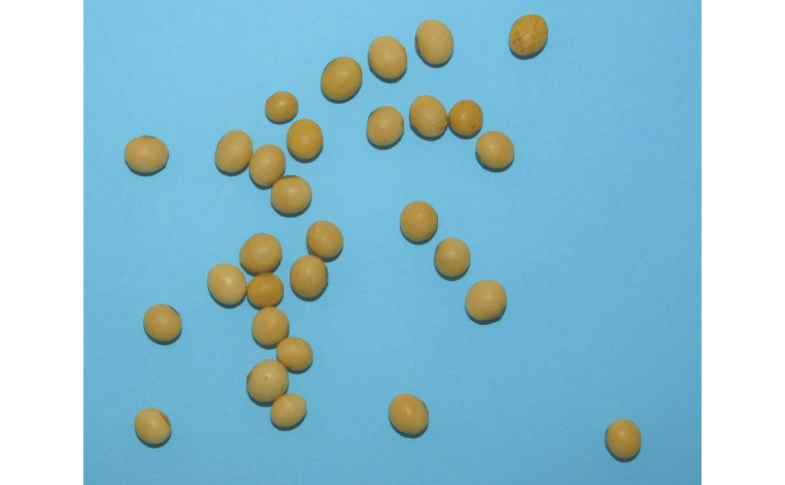
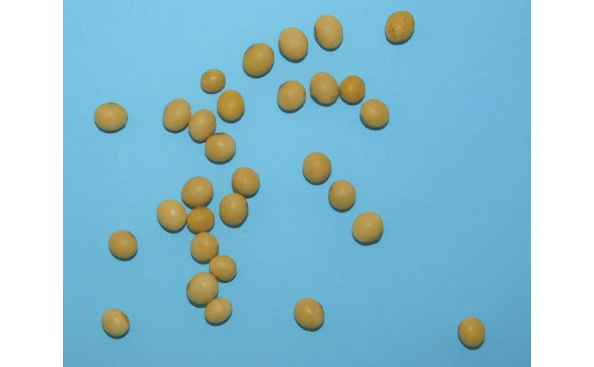

pick_count()opens an interactive section where the user will be able to click in the image to count objects (points) manually. In each mouse click, a point is drawn and an upward counter is shown in the console. Afterncounts or after the user press Esc, the interactive process is terminated and the number of counts is returned.pick_coord()Picks coordinates from the imagepick_palette()creates an image palette by picking up color point(s) from the image.pick_rgb()Picks up the RGB values from selected point(s) in the image.
Usage
pick_count(
img,
n = Inf,
col = "red",
viewer = get_pliman_viewer(),
size = 0.8,
plot = TRUE,
verbose = TRUE
)
pick_coords(
img,
n = Inf,
col = "red",
viewer = get_pliman_viewer(),
size = 0.8,
verbose = TRUE
)
pick_rgb(
img,
n = Inf,
col = "red",
viewer = get_pliman_viewer(),
size = 0.8,
plot = TRUE,
verbose = TRUE
)
pick_palette(
img,
n = Inf,
r = 1,
shape = "box",
viewer = get_pliman_viewer(),
show = "rgb",
title = "Pick colors in the image",
index = "B",
random = TRUE,
width = 100,
height = 100,
col = "red",
size = 0.8,
plot = TRUE,
palette = TRUE,
verbose = TRUE
)Arguments
- img
An
Imageobject.- n
The number of points of the
pick_*function. Defaults toInf. This means that picking will run until the user press Esc.- col, size
The color and size for the marker point.
- viewer
The viewer option. If not provided, the value is retrieved using
get_pliman_viewer(). This option controls the type of viewer to use for interactive plotting. The available options are "base" and "mapview". If set to "base", the base R graphics system is used for interactive plotting. If set to "mapview", the mapview package is used. To set this argument globally for all functions in the package, you can use theset_pliman_viewer()function. For example, you can runset_pliman_viewer("mapview")to set the viewer option to "mapview" for all functions.- plot
Call a new
plot(img)before processing? Defaults toTRUE.- verbose
If
TRUE(default) shows a counter in the console.- r
The radius of neighborhood pixels. Defaults to
1.- shape
A character vector indicating the shape of the brush around the selected pixel. It can be
"box","disc","diamond","Gaussian"or"line". Defaults to"box". In this case, if'r = 1', all the 8 surrounding pixels are sampled. Setting to"disc"and increasing the radius (r) will select surrounding pixels towards the format of a sphere around the selected pixel.- show
How to plot in mapview viewer, either
'rgbor'index'.- title
The title of the map view when
vieweris used.- index
The index to use for the index view. Defaults to 'B'.
- random
Randomize the selected pixels? Defaults to
TRUE.- width, height
The width and height of the generated palette. Defaults to
100for both, i.e., a square image of 100 x 100.- palette
Plot the generated palette? Defaults to
TRUE.
Value
pick_count()returnsdata.framewith thexandycoordinates of the selected point(x).pick_rgb()returns adata.framewith the R, G, and B values of the selected point(s).pick_palette()returns an object of classImage.
Author
Tiago Olivoto tiagoolivoto@gmail.com
Examples
if (interactive() && requireNamespace("EBImage")) {
library(pliman)
img <- image_pliman("soybean_touch.jpg")
# start a counting process
pick_count(img)
# get rgb from point(s)
pick_rgb(img)
# create a palette from point(s)
pick_palette(img)
}
#> Use the first mouse button to pick up points in the plot.
#> Press Esc to exit.
 #>
#> Use the first mouse button to pick up points in the plot.
#> Press Esc to exit.

#> Error in names(x) <- value: 'names' attribute [3] must be the same length as the vector [0]
#>
#> Use the first mouse button to pick up points in the plot.
#> Press Esc to exit.

#> Error in names(x) <- value: 'names' attribute [3] must be the same length as the vector [0]